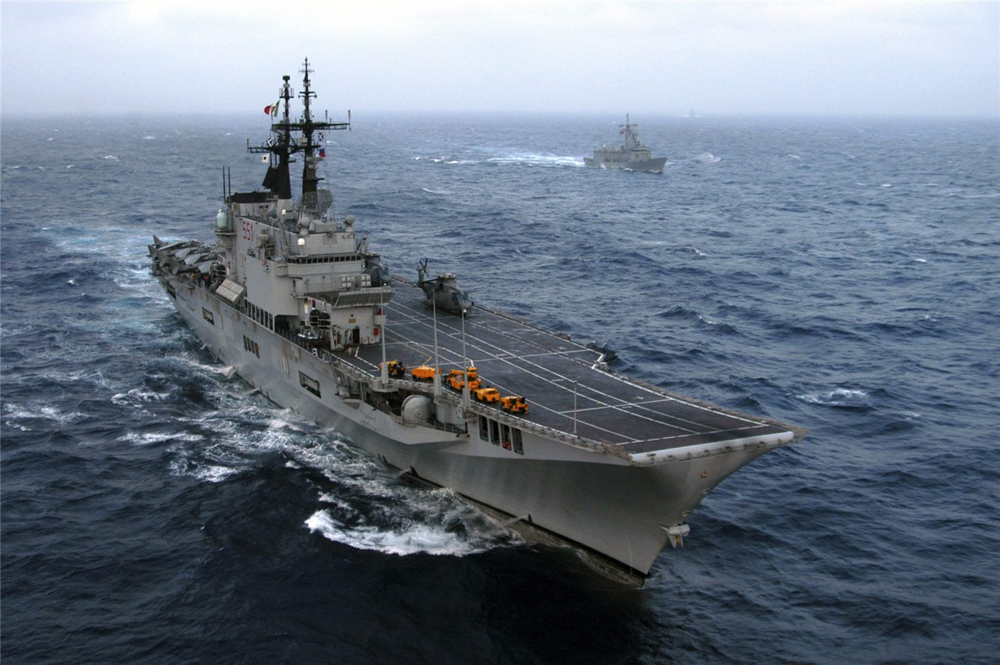

인도네시아, 아시아 다섯 번째 항모 보유국으로… 9월 ‘가리발디’ 인수
인도네시아가 오는 9월 이탈리아의 경항모 ‘가리발디’를 인수해 아시아에서 다섯 번째 항공모함 보유국이 된다. 이 함정은 무인기 운용이 가능한 것으로 전해졌다.
정가호 기자 · 2026.07.21
橋국제

인도네시아가 9월 이탈리아 경항모 ‘가리발디’를 넘겨받아 아시아 다섯 번째 항모 보유국이 된다고 대만 자유시보가 전했다. 무인기 운용 능력이 특징으로 언급됐다.
광고 문의 · 300×250항공모함은 넓은 해역에서 항공 전력을 투사할 수 있는 대형 함정으로, 보유국은 제한적이다. 인도네시아는 방대한 해역과 도서를 관할하는 나라로, 해양 안보 역량 강화를 꾀해 온 것으로 알려졌다.
이번 인수는 인도양·태평양을 잇는 해역의 군사 균형에 영향을 줄 수 있는 사안이다. 무인기 운용 능력은 정찰·감시 범위를 넓히는 요소로 주목된다.
다만 항모 운용에는 승조원 훈련, 정비·보급, 호위 전력 같은 방대한 체계가 뒷받침돼야 한다. 함정 확보가 곧 전력화로 직결되는 것은 아니라는 점도 지적된다.
華橋時報는 군사 동향을 특정국의 위협으로 단정하기보다, 역내 균형과 안정이라는 관점에서 전한다. 해양 안보의 변화는 교역과 항행에 기대어 사는 모두의 관심사다.
출처·참고 (사실 확인용 — 본문은 직접 재작성)
· 自由時報
· 自由時報